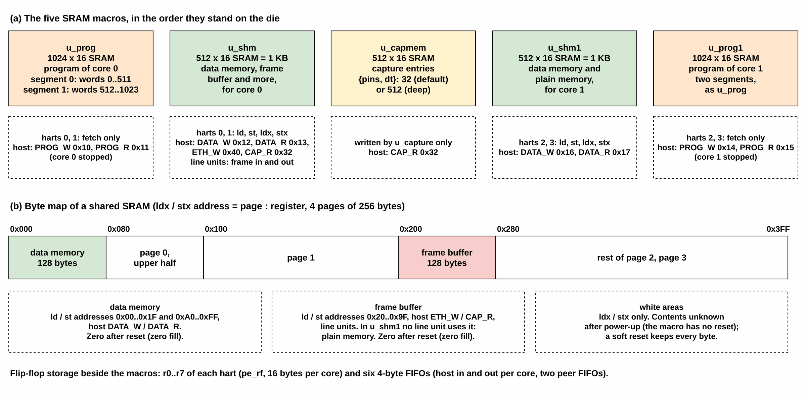
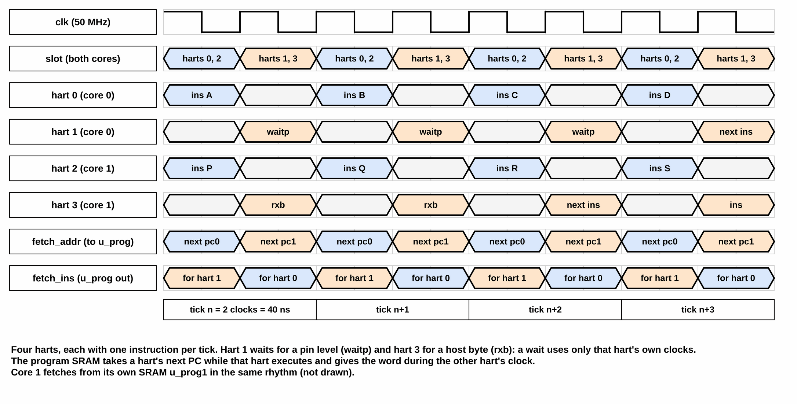
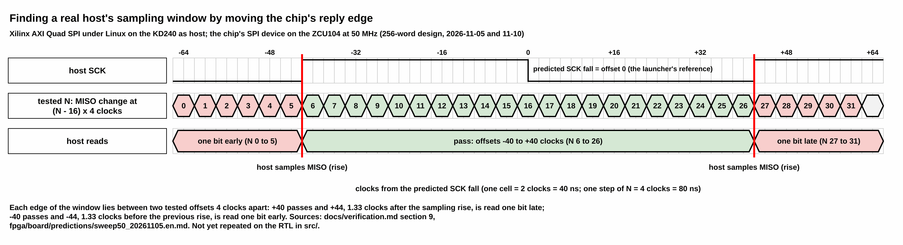

Docs / Design / docs/architecture.md of the competition repository
Architecture
On this page (20 sections)

The blocks of src/project.v with their instance names (the figure of the README, docs/fig/src/gen_readme_figs.py).
Structure
The chip is two cores around shared pins, with one host link:
| Part | Instances | Notes |
|---|---|---|
| Host link | u_host (pe_host_spi) |
one SPI device for both cores; a command code names the core it is for (Host SPI) |
| Core 0 | u_core (pe_core: harts 0 and 1), u_prog (1024 x 16 SRAM), u_shm (512 x 16 SRAM), u_in_fifo, u_out_fifo |
owns the capture, the line units and the frame buffer; its pad registers form the pins of all four harts |
| Core 1 | u_core1 (the same pe_core: harts 2 and 3), u_prog1, u_shm1, u_in_fifo1, u_out_fifo1 |
the same firmware runs on it; its capture and line unit instructions do nothing (Two cores) |
| Between the cores | u_p01, u_p10 (pe_fifo) |
four bytes each way, txp and rxp |
| Shared by all harts | pad registers and input synchronizers, u_pel, the general outputs, the delay line registers of u_dly (P0 to P3, dly.md) |
a write of core 0 wins over one of core 1 in the same clock |
| Core 0 only | u_capture with u_capmem (512 x 16 SRAM), u_eth, u_erx, u_usb, u_rmii, u_spw |
the line units use the frame buffer in u_shm; one is selected at a time by ETH_CFG |
| Reset | rst_m, rst_s in src/project.v |
synchronized release (Timing) |
Five SRAM macros hold the larger storage; everything else is flip-flops (the register files of 16 bytes per core, six 4-byte FIFOs, the state of the harts and the blocks).

src/pe_ffmem.v (the flip-flop memory of the data memory and frame buffer up to branch int4) is still in src/ and in the source lists, but no block instantiates it since branch int5.
Pins
| Pin | Use |
|---|---|
ui[0:2] |
Host SPI SCK, CS_N, MOSI |
ui[3:7] |
General inputs |
ui[7] |
Also the Ethernet receive line (one level from an external LVDS receiver) while the receiver is armed |
uo[0] |
Host SPI MISO |
uo[1] |
Core has data for the host |
uo[2:7] |
General outputs |
uo[6], uo[7] |
Ethernet TD+ and TD- instead of gpo4, gpo5 while ETH_CFG bit 0 is set |
uio[0:7] |
Protocol pins P0 to P7 |
uio[0], uio[1] |
USB D+ and D- of the full-speed line unit instead of P0, P1 while ETH_CFG bit 4 is set |
uo[5:7], ui[5:7] |
RMII TX_EN, TXD0, TXD1 and CRS_DV, RXD0, RXD1 instead of gpo3 to gpo5 and gpi2 to gpi4 while ETH_CFG[7:5] is 1 or 2 (rmii.md) |
uo[6:7], ui[6:7] |
SpaceWire D and S out, D and S in while ETH_CFG[7:5] is 3 (spacewire.md) |
Each of the four harts drives P0 to P7 through its own output and enable registers. A pin is enabled when any hart enables it and is low when any hart drives it low, high when one drives it high and none low (a wired AND, like an open-drain bus with a pull-up), so the harts can be several devices on one bus: docs/dual_role.md. Core 0's pad registers form the pins from the drives of both cores. low, high, rel, shout, wrp and woe change only the registers of the hart that runs them; rdp, shin, waitp and the capture read the pins after the synchronizer, as all harts see them. A launch (plaunch) changes the output bit of the hart that armed it. The host never drives uio. No pad changes its output and its enable bit at the same clock edge where the state in between would be low: a push-pull drive from release sets the output bit one clock before the enable, a release from push-pull high clears the enable one clock before the output bit, so the pads show no pulse whatever the delays of the two paths (dual_role.md).
Timing
The clock is 50 MHz. One tick is two clocks, or 40 ns. Each hart runs one instruction per tick unless it stalls. Inputs pass through two synchronizer flip-flops. One exception: the check of the delay lines on P0 to P3 that an input has been still compares its own two flip-flops in_m and in_s in src/pe_dly.v, so the first flip-flop after the pin reaches the line select directly (dly.md, Calibration).
Reset: rst_n low resets every flip-flop at once, with or without a clock (all outputs 0, no protocol pin enabled). Its release is synchronized (rst_m, rst_s in src/project.v, since branch int5b): the blocks leave reset at the second rising clock edge after rst_n rises, all at the same edge and a whole clock after the internal reset moved (half a clock for the few falling-edge flip-flops), wherever in the clock period rst_n rose. Before that the release went to every flip-flop directly, so a release close to a clock edge could have let some of them start one clock before the others. What it changes: the first clock in which anything moves is two clocks later than rst_n (an even number, so the harts' clocks keep their phase against a count from the release); the zero fill of the shared SRAMs ends 130 clocks after rst_n rises instead of 128, and a host access in that window is not served; rst_n must stay high for two clock edges before anything starts, and a low pulse of any width, also between two edges, still resets everything. test/test_reset_sync.py releases rst_n at 24 points of the clock period and checks the time of the internal release to the picosecond; a zero-delay simulation cannot show a recovery violation, so the timing itself is for the static timing report (recovery and removal of rst_s).

The two harts of a core own alternating clocks (slot in src/pe_core.v), so a hart that waits or stalls uses only its own clocks. Both cores step on the same clocks: harts 0 and 2 execute in one clock, harts 1 and 3 in the next. The fetch from the SRAM program memory fits in the same rhythm (Memory choice, below).
tset P sets a period of P ticks. Each twait ends exactly P ticks after the previous one, whatever ran in between, as long as that code takes less than P ticks. If it takes P ticks or more, the twait comes late: it ends at once, the next period starts from there, and the hart's sticky late flag records it (STATUS byte 3 bit 3 for hart 0, bit 7 for hart 1, cleared by soft reset). A host can run a protocol at its fastest setting and read this flag to see whether the firmware kept up. The same question can be asked before a program is loaded: tools/petime.py reads a .pe file and decides for every twait a hart can reach whether this flag can be set there (petime.md).
tpre n (n = 0 to 7) makes the timer unit 2^n ticks for the hart that runs it: tset, tsetr, twait, waitp.to, tgeth and tgetl all count units, so the longest period grows from 65535 ticks (2.6 ms) to 65535 x 128 ticks (335.5 ms). The unit restarts at tset, tsetr and tpre; the count drops on the last tick of each unit, and a period ends (a twait returns, a waitp.to gives up) only on such a tick. A period of P is therefore exactly P x 2^n ticks from one twait to the next and from tset to the first, and a late twait ends at the next unit edge. The two harts have their own prescaler. Soft reset sets n = 0, the timing of the first instruction set.
Instructions
| Instruction | Meaning |
|---|---|
nop halt twait capon capoff |
System |
tgeth rd, tgetl rd |
Read the timer |
ldi rd,imm / addi rd,imm / cmpi rd,imm |
Immediate |
mov add sub and or xor rd,rs / shl shr rd |
ALU |
cmp test ra,rb |
ALU, flags only |
jmp jz jnz jc jnc call addr, ret |
Branch to word 0 to 511 of the PC's segment (512 words, branch int5), one level of call |
ljmp addr, lcall addr |
Jump or call to any of the 1024 words (branch int5); ret returns to a 10-bit address |
ldx rd, p:[ra], stx rs, p:[ra] |
Load or store byte {p, ra} of the core's 1 KB shared SRAM (branch int5), as ld/st in time |
dlyw sel, rs, dlyr rd, sel, dlyr.cal rd |
Write or read delay line register sel (0 to 3 the outputs of P0 to P3, 4 to 7 their inputs; {enable, 0, tap[5:0]}; bit 6 of register 0 turns the fine USB edges of part D2 on), or read the calibration value {in range, 0, taps per clock[5:0]} (branch int5 part D1, dly.md) |
tfn ra, rb, tfk ra, rb, tfm ra, rb, twait.f, twait.f.nb |
Set N (and start), k or M of the hart's fractional tick generator to {ra, rb} (a tick every N + k/M clocks); wait for the next tick, or take a pending one without waiting (Z = 1 if none was pending) (branch int6, Tick generators) |
djnz rd,addr |
Decrement and branch |
low high rel pin |
Drive low, drive high, release |
shout[.lsb][.od] rd,pin |
Shift one bit out, rotating rd |
shin[.lsb] rd,pin |
Shift one bit in, Z=1 if the pin is low |
rdp wrp woe gpo gpi reg |
Whole-port access |
waitp[.to][.frz] pin,level |
Wait for a level. .to gives up when the timer ends and sets Z=1; a match sets Z=0 (and wins when both happen in one tick). .frz stops the timer on match |
waitp2[.to][.frz] pa,la,pb,lb |
Wait until pin pa is at level la or pin pb at level lb, checked in every tick like waitp. C = 1 when pb is at lb as it ends (also when pa matches in the same tick), C = 0 when only pa matched or on a timeout. .to and .frz as for waitp |
tset imm, tsetr ra,rb |
Set the period and the count, and unfreeze the timer: imm is 12 bits (0 to 4095), {ra, rb} 16 bits |
rxb[.nb] rd, txb[.nb] rs |
Host FIFO. .nb sets Z instead of stalling |
plaunch pin,val,off, plaunchr pin,val,rs |
Launch: change pin to val at the next predicted reference edge plus off clocks (off -64..63 immediate, or -128..127 signed in rs). Stalls while a launch is pending |
pelsel pin,pol |
Reference edge of the launcher: pin, pol 1 for rising, 0 for falling |
ld rd,addr, ld rd,[ra], st rs,addr, st rs,[ra] |
Byte at addr (0 to 127) or at the address in ra (0 to 255), see Load/store address space |
erxon, etx rs, erxw, erxl rd |
Ethernet: arm the receiver, send rs bytes from the frame buffer, wait for the receiver (Z=0: a good frame), read the received length (255 if longer). With ETH_CFG bit 4 the same for USB packets (usb_fs.md); etx with rs bit 7 sends the handshake PID {~rs[3:0], rs[3:0]}. With ETH_CFG[7:5] = 1 or 2 the same on RMII (rmii.md) |
crc[.lsb] rd,n |
Feed the low n (1 to 8) bits of rd into the CRC register, MSB first (rd[n-1] first) or LSB first (rd[0] first) |
crcset ra,rb, crcpoly ra,rb |
CRC register or polynomial = {ra, rb} |
crcgh rd, crcgl rd |
Read the CRC register, high or low byte |
adc sbc rd,rs, cpc ra,rb |
Add, subtract with C in (C out; after sbc and cpc C is the borrow). cpc writes nothing |
rlc rd, rrc rd |
Rotate left or right through C |
par rd, par ra,rb |
C = parity of rd (of ra AND rb), Z = 1 if that is 0; writes nothing |
jtab rs |
Jump to the word after jtab plus rs (0 to 255): a table of jmp |
tpre n |
Timer unit of this hart: 2^n ticks, n = 0 to 7 |
Flags and state
These rules fill gaps of the table above; the reference model tools/peiss (docs/iss.md, choices 1 to 8) was written with them and the lockstep test checks them against the RTL.
- Z and C belong to each hart.
ldi,djnz,tgeth,tgetl,ld,st, the pin instructions other thanshin, the CRC instructions, branches andtprekeep both. - Every ALU instruction sets Z from its 8-bit result,
movtoo.and,or,xor,movandtestkeep C (their bit-4 forms set C to the parity instead).add,addiandadcset C to the carry out;sub,sbc,cmp,cpcandcmpiset C to the borrow (1 when the unsigned result goes below 0, so equal operands give Z=1, C=0);shl,shr,rlc,rrcput the bit shifted out in C. shinsets Z=1 when the pin is low.rxbandtxbset Z=0 when the byte moves (also the blocking forms); the.nbforms set Z=1 when the FIFO is empty or full.waitpwithout.tokeeps Z.waitp2sets C as it ends (1: the second pin is at its level) and, without.to, keeps Z.relreleases the pin and also clears the hart's output bit for it (it is the open-drain form ofhigh), so a laterwoealone does not drive that pin high.- The timer of a hart counts only in the ticks the hart runs: its run bit set and not halted, including the tick of a
halt, a stalled tick and the tick in whichwaitp.frzmatches. - Soft reset acts on both cores. It clears the harts' PCs (hart 1 to START1, hart 3 to START3), return addresses, flags, halted, late, timer, period, freeze, prescale, CRC and polynomial registers, the harts' pin registers (every pin released, output bit 0), the general outputs, the launcher and its reference pin, the host and peer FIFOs, and stops the Ethernet transmitter and receiver. r0 to r7, the data memory, the frame buffer and the program memory keep their contents (a load's late register write still lands), and the steal flag clears. No instruction runs in the soft reset cycle.
Encoding
Every instruction is one 16-bit word; bits 15 to 12 are the opcode. The layouts below are those of tools/peasm.py, written MSB first in groups of four bits. Field letters: d the register written or sent (rd, or rs for txb, st and etx), s a second register, a/b the two registers of cmp, test, tsetr, crcset, crcpoly (ra, rb), r an address or offset register, p a pin (P0 to P7), i an immediate (8 bits for ldi, addi, cmpi: -128 to 255, kept modulo 256; 12 bits for tset; 7 bits for the plaunch offset and the ld/st address), t a 9-bit word address, f a function or sub-code; other letters are given in the row. Registers are r0 to r7, eight bytes per hart.
| Instruction | Bits 15..0 | Fields |
|---|---|---|
nop, halt, twait, capon, capoff, erxon, erxw |
0000 0000 0000 ffff |
f = 0, 1, 2, 5, 6, 8, 10 |
tgeth rd, tgetl rd, etx rs, erxl rd |
0000 ddd0 0000 ffff |
f = 3, 4, 9, 11 |
pelsel pin,pol |
0000 000p ppo0 0111 |
o = 1 rising, 0 falling |
ldi rd,imm |
0001 ddd0 iiii iiii |
|
addi rd,imm |
0010 ddd0 iiii iiii |
|
cmpi rd,imm |
0011 ddd0 iiii iiii |
|
mov add sub and or xor rd,rs |
0100 ddds ss00 0fff |
f = 0 to 5 |
shl rd, shr rd |
0100 ddd0 0000 0fff |
f = 6, 7 |
cmp ra,rb, test ra,rb |
0100 aaab bb00 1fff |
f = 2 (sub), 3 (and); bit 3 = flags only, no write |
jmp jz jnz jc jnc call addr |
0101 ffft tttt tttt |
f = 0 to 5 |
ret |
0101 1100 0000 0000 |
f = 6 |
djnz rd,addr |
0110 dddt tttt tttt |
|
low pin, high pin, rel pin |
0111 000p pp00 00ov |
low o v = 0 0, high 0 1, rel 1 1 |
shout[.lsb][.od] rd,pin |
0111 dddp pp00 1lo0 |
l = LSB first, o = open drain |
shin[.lsb] rd,pin |
0111 dddp pp01 0l00 |
l = LSB first |
rdp wrp woe gpo gpi rd |
0111 ddd0 00ff f000 |
f = 3 to 7 |
waitp[.to][.frz] pin,level |
1000 000p pp00 0zev |
v = level, e = .to, z = .frz |
waitp2[.to][.frz] pa,la,pb,lb |
1000 qqqp pp1w 0zev |
p, v = pa, la; q, w = pb, lb; e, z as waitp |
tset imm |
1001 iiii iiii iiii |
12-bit period in ticks |
tsetr ra,rb |
1010 aaab bb00 0000 |
period = {ra, rb} |
rxb[.nb] rd, txb[.nb] rs |
1011 ddd0 0000 00nx |
x = 1 txb, n = .nb |
plaunch pin,val,off |
1100 pppv 0iii iiii |
7-bit signed offset |
plaunchr pin,val,rs |
1100 pppv 1000 0rrr |
offset in rs |
ld rd,addr, st rs,addr |
1101 dddw 0iii iiii |
w = 1 store; address 0 to 127 |
ld rd,[ra], st rs,[ra] |
1101 dddw 1000 0rrr |
address in ra |
crc[.lsb] rd,n |
1110 ddd0 0000 lnnn |
l = LSB first, nnn = n - 1 |
crcset ra,rb, crcpoly ra,rb |
1110 aaab bbff f000 |
f = 2, 3 |
crcgh rd, crcgl rd |
1110 ddd0 00ff f000 |
f = 4, 5 |
tpre n |
0000 0000 0nnn 1100 |
f = 12 |
adc rd,rs, sbc rd,rs |
0100 ddds ss01 0fff |
f = 1, 2; bit 4 = with C |
cpc ra,rb |
0100 aaab bb01 1010 |
sbc, flags only |
rlc rd, rrc rd |
0100 ddd0 0001 0fff |
f = 6, 7 |
par ra,rb |
0100 aaab bb01 1011 |
and, flags only; par rd = par rd,rd |
jtab rs |
0101 111s ss00 0000 |
f = 7 |
Bit 8 of the branch and djnz words was unused while the program memory had 256 words; it is now bit 8 of the target, so older binaries assemble to the same words. Opcode 0xF holds ljmp, lcall, ldx and stx since branch int5 (section 1024-word program) and dlyw, dlyr and dlyr.cal (bit 11 = 0, bits 5:3 = 001; Delay lines); since branch int6 dlyw needs bits 7:6 = 10 and dlyr bit 7 = 0, and bits 5:3 = 101 are the tick generator rows (before, every word with bits 4:3 = 01 was dlyw or dlyr by bit 7); its other words, system codes 13 to 15 and the other unlisted sub-codes do nothing (the PC advances); ALU bit 5 is ignored. A waitp word (bit 5 = 0) ignores bits 11 to 9, 4 and 3, which the assembler always set to 0; waitp2 (bit 5 = 1) ignores bit 3.
Extended instructions
These use encodings the first instruction set left free: ALU bit 4 (ignored before, and always 0 from the assembler), branch condition 7, system code 12 and, since the third integration (int3, revisions), bit 5 of waitp with bits 11 to 9 and 4 (ignored before, always 0 from the assembler). Every program written for the first instruction set assembles to the same words (test/check_asm_compat.py compares all firmware files and every program the tests assemble, old assembler against new), and opcode 0xF stayed free until branch int5 used it for the 1024-word program. Each takes one tick, like every instruction that does not wait.
| Instruction | Encoding | Operation | Z | C | Ticks |
|---|---|---|---|---|---|
adc rd,rs |
0x4011 + rd, rs |
rd = rd + rs + C | result = 0 | carry out | 1 |
sbc rd,rs |
0x4012 + rd, rs |
rd = rd - rs - C | result = 0 | borrow out | 1 |
cpc ra,rb |
0x401A + ra, rb |
ra - rb - C, nothing written | result = 0 | borrow out | 1 |
rlc rd |
0x4016 + rd |
rd = {rd[6:0], C} | result = 0 | old rd[7] | 1 |
rrc rd |
0x4017 + rd |
rd = {C, rd[7:1]} | result = 0 | old rd[0] | 1 |
par ra,rb |
0x401B + ra, rb |
ra AND rb, nothing written | value = 0 | parity (1 = odd number of ones) | 1 |
mov, or, xor with bit 4 |
0x4010, 0x4014, 0x4015 + rd, rs |
as without bit 4 | result = 0 | parity of the result | 1 |
jtab rs |
0x5E00 + rs |
PC = PC + 1 + rs, modulo 512 | unchanged | unchanged | 1 |
tpre n |
0x000C + n << 4 |
timer unit 2^n ticks, unit count restarts | unchanged | unchanged | 1 |
waitp2 pa,la,pb,lb |
0x8020 + pa << 6, la, pb << 9, lb << 4 (.to + 2, .frz + 4) |
ends when pa is at la or pb at lb |
.to: 0 on a match, 1 on a timeout; else unchanged |
1: pb at lb; 0: only pa, or timeout |
1 per tick until it ends, as waitp |
"+ rd, rs" means rd in bits 11 to 9 and rs in bits 8 to 6, as in the table above. A 16-bit add is add lo; adc hi, a subtract sub lo; sbc hi, an unsigned compare cmp lo; cpc hi (C = 1: below); Z then refers to the high byte. shl lo; rlc hi shifts a 16-bit value left. A table jump is jtab r followed by jmp entries (two ticks to the case). LIN PID parity bits are par id,mask with mask 0x17 and 0x3A. test/test_isa2.py checks each against Python models, including all 256 parity values, carries in both states at 0x00, 0x7F, 0x80 and 0xFF, a table across word 256, a jump past word 511, and prescaled periods measured on a pin for n = 0 to 7.
waitp2 lets one hart wait for two events at once, which one hart could not do before: with per-hart pin registers (dual_role.md) a hart that drives a pin must also be the one that releases it, so a hart that waits for the next clock edge of a bus must see the end of the transfer in the same wait. firmware/eeprom93.pe waits for each CLK edge of a read with waitp2 CLK, level, CS, 0 and releases DO on C = 1 (TCZ 140 to 160 ns at the end of a read instead of 1000 to 1390 ns, eeprom93.md). Its wake-up delay is that of waitp on either pin. test/test_isa2.py test_waitp2 checks Z and C for a wake by the first pin, the second and both in one tick, with and without .to, the timeout (Z = 1, C = 0), .frz, and the delay from the pin change to the next instruction against waitp for both pins at eight phases of the tick.
Host SPI
A transaction ends when CS_N has been high for four clocks in a row (80 ns at 50 MHz). A shorter high pulse inside a transaction, a glitch on the line, is ignored and the bytes after it stay data of the same command (test_int6_cross.test_cs_glitch_ignored).
The command list is at the top of src/pe_host_spi.v. In short:
| Byte | Command |
|---|---|
0x01 |
CTRL: bit 0 runs hart 0, bit 1 runs hart 1, bit 2 is a soft reset (it also stops the Ethernet transmitter at once, see Ethernet), bits 3 and 4 run harts 2 and 3 of core 1 (branch int5; ignored before) |
0x02 |
START1: hart 1 start address; one byte below 256, or bits 9:8 (bit 8 before branch int5) then the low byte |
0x04 |
START3: hart 3 start address, as START1 (branch int5) |
0x05 |
STATUS2: STATUS with the hart fields of core 1 in the same places: flags {halted[3:2], run[3:2], ...}, pc2, pc3, {late3, in1 count, late2, out1 count}, byte 6 {0 x2, steal, wdrop, pc3[9], pc2[9], pc3[8], pc2[8]}, ID 0x51 in byte 5 (branch int5); the revision in byte 11 as in STATUS |
0x14 to 0x17, 0x22, 0x23 |
PROG_W, PROG_R, DATA_W, DATA_R, FIFO_W, FIFO_R of core 1, as 0x10 to 0x13, 0x20, 0x21 (branch int5) |
0x03 |
STATUS: flags {halted, run, eth busy, launcher locked, capture state}, pc0, pc1, {late1, in count, late0, out count}, {launcher err, 0, capture count[5:0]}, ID 0x50, {0 x2, steal, wdrop, pc1[9], pc0[9], pc1[8], pc0[8]}, {triggered, deep, 0 x4, capture count[9:8]}, capture count[7:0], {0 x7, trigger index[8]}, trigger index[7:0], the RTL revision (byte 11), then 0x50 up to byte 15; the 16 bytes repeat. wdrop and the revision are new on branch int5b (below) |
0x10, 0x11 |
PROG_W, PROG_R: program memory, a one-byte start address (0 to 255) then hi, lo pairs; the auto increment goes on to word 1023 (511 before branch int5), so a program of more than 256 words is written from 0. Both only while both harts of the core are stopped: a PROG_W word is otherwise dropped (wdrop), and a PROG_R returns the words the running core fetches, not the ones asked for |
0x12, 0x13 |
DATA_W, DATA_R: data memory at the load/store addresses below, address then bytes with auto increment. DATA_W writes only while both harts of the core are stopped (a byte is otherwise dropped, wdrop); DATA_R reads at any time (0 at the frame buffer addresses) |
0x20, 0x21 |
FIFO_W, FIFO_R: bytes to and from the core |
0x30 |
CAP_CFG: pin mask, {pre-trigger[2:0], deep, prescale[3:0]}, then optionally trigger mask, trigger value, {0 x3, falling, rising, edge pin[2:0]}. The second byte clears the trigger, so two bytes mean the capture without trigger as before (capture.md) |
0x31, 0x33 |
CAP_ARM, CAP_STOP |
0x32 |
CAP_R: word address 0 to 63 (capture entries in 0 to 31, or the frame buffer; since int5 an entry is shown at word w while frame buffer word w has not been written after it, capture.md), then hi, lo pairs. A first address byte with bit 7 set reads the deep capture memory instead: 0x80 \| entry[8], then entry[7:0], entry 0 = the oldest kept |
0x34 |
PEL_R: launcher period estimate, hi byte (integer clocks mod 256) then lo byte (fraction /256), repeating |
0x40 |
ETH_W: word address, then hi, lo byte pairs. Frame byte 2k is the hi byte of word k |
0x41 |
ETH_TX: length in bytes after the SFD (max 128; a larger value is ignored and nothing is sent), starts sending |
0x42 |
ETH_CFG: bit 0 drives TD+/TD- on uo[6]/uo[7], bit 1 sends link pulses, bit 2 appends the FCS (the ETH_TX length then excludes it), bit 3 receives only frames for the ETH_MAC address or broadcast. Bit 4 selects the USB full-speed line unit on uio[0]/uio[1] for ETH_TX, ETH_RXC, ETH_RXS and the harts' etx, erxon, erxw, erxl; then bit 2 appends the CRC16 of DATA packets and bit 3 drops SOF packets (usb_fs.md). Bits 7 to 5 select a line unit instead of both: 1 RMII at 10 Mbit/s, 2 RMII at 100 Mbit/s (rmii.md), 3 SpaceWire (spacewire.md); 0 (reset) and 4 to 7 keep the units above (4 is kept for a CAN FD bit engine, designed but not built: canfd.md) |
0x43 |
ETH_RXC: bit 0 = 1 arms the receiver for one frame (ignored while transmitting or while the capture is armed), 0 cancels |
0x44 |
ETH_RXS: {receiving, done, fcs ok, 0, 0, len[10:8]}, len[7:0], repeating. The first 128 bytes are read with CAP_R |
0x45 |
ETH_MAC: the chip's MAC address, six bytes in wire order (first byte sent first) |
0x48 |
MBIST (branch int6): one byte cfg = {0 x3, alg, allbg, macro[2:0]} starts the self test of one SRAM macro (alg 0 March C-, 1 March SS; allbg 1 five data backgrounds; macro 0 core 0 program, 1 core 0 shared SRAM, 2 capture SRAM, 3 core 1 program, 4 core 1 shared SRAM), then the result bytes as MBIST_R. Nothing starts while any run bit of CTRL is set, while a test runs, or for macro 5 to 7. While a test runs, CTRL leaves the run bits 0 and PROG_W and DATA_W are dropped with wdrop. The test destroys the contents of the macro (mbist.md) |
0x49 |
MBIST_R: result bytes 0 to 11 of the last test with auto increment: {busy, done, fail, alg, allbg, macro[2:0]}, failing reads (2 bytes), first failure {element[2:0], op[2:0], address[9:8]}, address[7:0], syndrome (2 bytes), {background[2:0], 0, bit[3:0]}, clocks of the run (3 bytes), 0x4D; bytes 12 to 15 read 0, then byte 0 again |
0x50 |
DBG_W (branch int6): a debug register number (0 to 15), then bytes written with auto increment: breakpoints, single steps, the hart and word of an injected instruction, stop bits (debug.md). The same code is the ID byte of STATUS; as a command byte it is DBG_W |
0x51 |
DBG_R: a debug register number, then bytes read with auto increment; register 13 holds Z and C of the four harts, register 14 reads 0xDB (debug.md) |
STATUS: revision byte and dropped writes
Two additions of branch int5b; every other bit of STATUS and STATUS2 means what it did.
- Byte 11 is the RTL revision (
RTL_REVinsrc/pe_host_spi.v:0x01on branchint5b,0x02since the delay lines of P0 to P3,0x03since 46 taps and the fine USB edges (fd6911b),0x04since the debug unit, the instruction additions, the tick generators and the SRAM self test (0346f7f),0x05since the fixes of the panel review of 2026-11-14 (d0e2559, revisions.md); the value of a given tree is the one in that file), in STATUS and in STATUS2. An RTL from before the byte answers the filler0x50there (the hardenedint3design, the FPGA bits), so0x50is never a revision and a host can tell the two apart; bytes 12 to 15 stay0x50. - Byte 6 bit 4 is
wdrop, a bit that was always 0: a PROG_W word or a DATA_W byte was dropped because a hart of the core it was for was running. It is one flip-flop for both cores, shown in STATUS and STATUS2 alike, sticky, and cleared by a soft reset, likestealbeside it and the late flags. A write that is taken, a DATA_W to an address that is not data memory (0x20to0x9F, never written), and reads do not set it. A host that loads a program can read it once afterwards instead of reading the program back.
The host must read MISO before it raises SCK: the chip loads the next byte into its shift register a few clocks after the 8th SCK rise of a byte, not at the following SCK fall, so a host that raises SCK and samples MISO later than about 80 ns reads the first bit of the next byte in place of the last bit of each byte (bringup.md). A hardware SPI master in mode 0, which samples at the rising edge, is not affected.
test/test_status_ext.py checks both additions on the pins, for both cores; test/controls.sh st_* has eight weakened copies (the revision left as the filler or in byte 12, the flag never set, not for DATA_W, for any DATA_W address, for core 0's run bits only, not sticky, not cleared), each caught.
Load/store address space
| Address | Contents |
|---|---|
0x00 to 0x1F |
Data memory, bytes 0 to 31 |
0x20 to 0x9F |
Frame buffer byte address - 0x20 (the Ethernet buffer; up to branch int4 also the default-mode capture memory) |
0xA0 to 0xFF |
Data memory, bytes 32 to 127 (the byte index is address[6:0]) |
An absolute ld/st reaches 0 to 127, which covers every Ethernet, ARP, IP and ICMP header field; the register form reaches all 256. While ETH_CFG[7:5] is 3, 0x78 to 0x7E (frame bytes 88 to 94) are the registers of the SpaceWire line unit instead (spacewire.md). A store to the frame buffer follows the same rule as ETH_W: it is dropped while the capture is armed or running, while the transmitter is busy and while the receiver owns the buffer. With USB selected (ETH_CFG bit 4) the receiver writes only frame bytes 0 to 31 (0x20 to 0x3F) and the transmitter reads from byte 32 (0x40), so stores and ETH_W go on while the USB receiver is armed.
Data memory
128 bytes for ld and st (32 at 0x00 to 0x1F, 96 at 0xA0 to 0xFF) in each core, shared by the two harts of the core; flip-flops up to branch int4, since int5 part of the core's shared SRAM (below). A store is visible to a load of either hart in the next tick, so one hart can fill a buffer and the other can send it, with a byte in the memory as the flag between them. Soft reset keeps the contents, like the program memory. The host writes it with DATA_W while both harts are stopped, which is how settings reach a firmware without assembling it again (speed, mode, address; the .equ values are only defaults), and reads it with DATA_R at any time, for results or a register map that a device firmware serves. The hart isolation proof treats the data memory like the FIFOs: it is a channel between the harts on purpose, so the proof shows that hart 0 reads and writes the same addresses whatever hart 1 does, and takes the byte a load returns as an input.
Shared SRAM (branch int5)
The data memory and the frame buffer were 2,048 flip-flops with combinational read ports (193,746 um2 in synthesis). Since branch int5 they live in one SRAM macro per core, RM_IHPSG13_1P_512x16_c2_bm_bist in src/pe_shm.v (u_shm, 1 KB): bytes 0x000 to 0x07F are the data memory, 0x200 to 0x27F the 128-byte frame buffer of the line units, the rest is reserved for the extensions of the int5 plan. The macro has one port and a synchronous read, so the timing of ld and st was rebuilt around it without changing what a firmware sees:
- A
ldorstgoes to the SRAM at the edge that ends its cycle, the same edge at which a store into the flip-flops happened. A store is therefore visible to a load of either hart of the core in the next tick, as before. - A load's byte comes out of the SRAM after that edge and is written into the register file at the next edge, through a second write port (
src/pe_rf.v), in the other hart's cycle. The loading hart's next instruction is two clocks away, so it reads the value as before. Only the register file's clock-by-clock state differs (the register changes one clock later), which the reference model intools/peissfollows (iss.md). - Only the hart that owns a clock can execute a
ld/stin it, so the two harts of a core never meet at the SRAM port. - The host and the line units share the port. An edge goes, in this order, to the zero fill after reset (128 clocks: data memory and frame buffer to 0, as the flip-flops were after reset), the host (an SPI byte is answered one clock later, so its access cannot wait), a line unit that cannot wait (its write queue full or its oldest word waiting 7 clocks, or its read cache missing the current or the next word for 3 clocks), the executing hart, then a queued word, the host's read-ahead and the cache fill at free edges. A hart refused at its edge waits one tick like any stall (only its timer moves) and the sticky steal flag (STATUS byte 6 bit 5, cleared by soft reset) records it. The grant never depends on what a hart did, so with the flag at 0 every hart's timing is exact.
- The host reads ahead: the next
DATA_Rbyte is known one SPI byte (at least 64 clocks) early and the first one when 7 address bits are in; the nextCAP_Rframe buffer word one word early.pe_shmreads such a word at a free edge and keeps it until the access comes or a write changes it, so a host read takes a hart's edge only when the harts left no free edge in between (both harts doingld/stin every tick), or for the first word of aCAP_R. Host writes (DATA_Wonly while both harts are stopped,ETH_W) take their edge. - The line units read the frame through a cache of four words and write it through a queue of four words, filled and drained at free edges. RMII at 100 Mbit/s moves one word every 8 clocks; the repository's firmware holds the port for at most 19 edges in a row (two harts, 9
ld/steach in a row, from a static count over 129 files). A load or a host read of a word that is still in the queue gets the queued word, and a store orETH_Wto it also changes the queued copy, so a read always returns the last write. A receiver counts as owning the buffer until its queue is empty (rx_owninsrc/project.v), soerxw,ETH_RXS, a send and a capture arm see the whole frame in the SRAM. DATA_Rof a frame buffer address still reads 0 andDATA_Wthere is still dropped, as before.
The SRAM has no reset: bytes outside the two zero-filled areas start unknown (none is reachable by ld/st before branch int5 part C adds ldx/stx).
A host read can still take an edge from a hart when no edge is free in its read-ahead window (8 clocks for the first DATA_R byte); what a dummy byte in the read commands would and would not change is worked out in host_read_steal.md (a design, not built).
CRC
Each hart has a 16-bit CRC register and a 16-bit polynomial register, so the harts can check different protocols at once. crc rd,n shifts n bits through the register in one tick, so a byte costs one instruction and a bit-serial protocol can feed each bit as it arrives. Any CRC up to 16 bits fits:
- MSB first (
crc): the w-bit CRC and its polynomial are left aligned. CRC-15/CAN uses polynomial0x8B32(0x4599 << 1), init 0, and the result is the register >> 1. CRC-16/CCITT uses0x1021, init0xFFFF. - LSB first (
crc.lsb): the reflected polynomial and the CRC sit in the low w bits. CRC-16/USB uses0xA001, init0xFFFF, result inverted. CRC-5/USB uses0x14, init0x1F, result inverted.
Any final XOR is one xor in the firmware. Soft reset clears both registers. firmware/crc.pe computes the CRC of a message from the host; test/test.py checks it against the catalogue check values of six standard CRCs and against a bit-by-bit model.
Capture
0x30 sets the pin mask and a prescale of 2^n clocks. 0x31 or capon arms it. The first watched change writes entry 0, and each later change writes {pins, dt}. A dt of 255 with unchanged pins is a filler entry for long gaps. Capture stops after 32 entries. The prescaler restarts at arm, so the tick grid is aligned to the arm and the same pin pattern after an arm always gives the same dt values.
Deep mode (CAP_CFG byte 2 bit 4) records the same entries into a second SRAM macro, 512 of them, read in time order with CAP_R. Both modes take a trigger (a pin pattern, an edge of one pin, or both), and deep mode can keep up to 448 entries from before the trigger in a ring. Details, host sequences and the checks are in capture.md.
Predictive launcher
src/pe_pel.v watches one protocol pin chosen by pelsel (after the synchronizer), measures the interval between its reference edges and keeps a period estimate per (15.8 fixed point, 8 to 32767 clocks) with a phase accumulator that predicts the next edge. An interval is consistent when it is within -8 to +7 clocks of the integer part of per. It moves per toward itself by 1/4 of the error for the first 8 updates and by 1/16 afterwards, and sets the phase correction dph (6.8 fixed point, so the prediction can be up to 63 clocks off per) to 7/8 of (dph minus the error). The error, the interval minus per, is -2303 to 1792 in 1/256 clock, and neither it nor dph wraps (formal/pe_pel_props.sv, property 6). It locks after 32 consistent intervals and drops the lock when two periods pass without an edge. The edge counter stops at 32768 clocks, so for periods above 16384 clocks the lock is kept until the next edge instead. An interval more than 7 clocks too long is a pause: the edge that ends it re-anchors the phase and keeps the period, so the lock returns at that edge. An interval more than 8 clocks too short, or a second long one in a row, restarts the estimate.
plaunch reserves one pin change at the predicted next edge plus a signed offset in clocks. The pin changes in the clock where pin_out is written, so the host sees it at edge + offset within one clock (the firmware must have enabled the pin). The reservation is relative to the last edge seen at arm time, so later edges do not move it. "Next edge" means the next one the launcher has not seen yet: an arm placed within the synchronizer delay (three clocks) after a launch at offset 0 still targets the edge that launch was placed on. Only one reservation exists and all four harts share it: plaunch stalls the arming hart while one is pending, and pelsel from any hart changes the reference for all. A launch changes the output bit of the hart that armed it; if that hart writes the same pin (low, high, shout, wrp) in the clock where the launch fires, the launch wins for that bit. Clearing the run bits does not touch the launcher; a pending launch still fires. Soft reset clears the launcher state, the reference pin selection and err. The sticky err flag (STATUS byte 4 bit 7, cleared by soft reset) records an arm without lock, an arm whose time had already passed, or a reservation cancelled by a lost lock. 0x34 reads the period estimate.
The estimator arithmetic was widened on branch pelfix (merged here): on the RTL of 422ec10 an interval 8 clocks short of the integer period (d = -8) with a non-zero fraction of per wrapped the 12-bit error term, and the estimate and phase moved the wrong way; the error term now has 13 bits and dph is 6.8, and a formal property shows that the update cannot wrap (mutation.md).
firmware/spi_device_pel.pe uses it as an SPI device: the first bit of each MISO byte is placed by shout after the SCK fall, the other seven by plaunchr at the predicted next SCK fall plus (N - 16) * 4 clocks, where N is the GPI value, so the host can sweep the MISO edge across its sampling point. The launcher needs about 34 SCK falls after reset before it locks (one 5-byte transfer).

The sweep of this firmware against Xilinx AXI Quad SPI under Linux on the boards (256-word design; verification.md section 9). On the boards a script on the bench PC set N for each step (fpga/board/skew_sweep.tcl) and the host's read data gave pass or fail. firmware/margin_i2c.pe does a scan of the same kind as I2C controller, with the chip stepping the offset and judging each step itself, in simulation (margin.md).
Memory choice
Program memory is one IHP SRAM macro, RM_IHPSG13_1P_512x16_c2_bm_bist (512 x 16 bits, one port, synchronous read; 236.8 x 191.3 um, about 1/7 of the area the 256-word flip-flop memory had), and since branch int5 the 1024-word RM_IHPSG13_1P_1024x16_c2_bm_bist (below). The PC is 9 bits (10 since int5). The branch and djnz encodings had a spare bit, ins[8], which is now bit 8 of the target, so the instruction format did not change and every older binary means the same. The data memory and the frame buffer were flip-flops up to branch int4 and are a third macro of the same type since int5 (u_shm, below); a second macro of the same type is the capture memory (u_capmem, capture.md; deep mode, and since branch int5 the default mode too), placed 4 x 67.44 um to the right of the first so that the same power stripes pass through both.
The macro takes its address at the clock edge, so the fetch asks for a word one cycle earlier than an asynchronous memory would: while a hart executes, the address is its next PC (the one it is writing into its PC register), the word comes out during the other hart's cycle and is registered for the hart's next turn. A hart that does not run gives its PC as it stands. The host announces a soft reset one cycle ahead (it is registered from the CTRL byte), so word 0 is asked for in that cycle and word START1 in the soft reset cycle: both harts start at the same clocks as before, which keeps the phase of every firmware against the pins unchanged. PROG_R gives the macro the address prog_addr is about to take, so a read byte is ready as early as before. With both harts stopped and no PROG_W/PROG_R going on, the core keeps fetching, so a run started later finds its first word.
The macro has its own power pins (Metal4, like the block's stripes), so the block's vertical power stripes are placed through the macro's power columns; src/config.json and src/pdn_cfg.tcl hold that setup. The macro views in macro/ are copied from the IHP Open PDK at commit 2bbec755, the one the cmos5l flow uses; src/RM_IHPSG13_1P_512x16_c2_bm_bist.v is a port-only blackbox for synthesis, the PDK functional model is used in simulation, and the FPGA build uses a block RAM model with the same ports (fpga/common/).
1024-word program (branch int5)
Since branch int5 the program memory is RM_IHPSG13_1P_1024x16_c2_bm_bist (1024 x 16, 236.8 x 336.46 um, the same column layout as the 512x16, so the power stripes pass through it the same way). The PC and the return address have 10 bits, and the memory is two segments of 512 words (PC bit 9):
- The sequential step, the near branches (
jmp,jz..jnc,call,djnz, 9-bit targets) andjtabstay in the segment of the PC: 511 is followed by 0 and 1023 by 512, as 511 was followed by 0 before. Every binary of the 512-word core runs unchanged in segment 0 (test/check_asm_compat.py --rev 067e608: all 117 firmware files ofint4give the same words). ljmp t(1111 10 t[9:0]) andlcall t(1111 11 t[9:0]) reach any word;retuses all 10 bits of the return address, so it returns across the segments.ldx rd, p:[ra](1111 0 ddd 0 pp 00 aaa) andstx rs, p:[ra](1111 0 sss 1 pp 00 aaa) reach byte{p, ra}of the core's 1 KB shared SRAM: page 0 is the data memory (bytes 0 to 127, then 128 to 255 forldx/stxonly), page 1 the extension area, pages 2 and 3 the frame buffer area (bytes 0 to 127 of page 2 are the line units' frame buffer,ld/st0x20 to 0x9F). Astxinto pages 2 and 3 follows the frame buffer rule (dropped while the capture is armed, a transmitter runs or a receiver owns the buffer). They take the same time asld/st(a load writes rd one clock later, a steal stalls one tick) and never reach the SpaceWire registers.- Hart 1 can start anywhere (START1 bits 9:8); STATUS byte 6 shows bit 9 of both PCs.
tools/peasm.py:.org N; a near branch ordjnzwhose target is in the other segment is assembled asljmp/lcall(jmp,call, one word), as the opposite branch over anljmp(jz..jnc, two words, the layout settles in a few passes) or refused (djnz); code that would run from word 511 into word 512 is refused. A two-hart program gets 512 words per hart by puttinghart1:at.org 512.
Two cores (branch int5)
Since branch int5 the chip has two cores of two harts each: core 0 (harts 0 and 1, u_core) and core 1 (harts 2 and 3, u_core1). Each core has its own 1024-word program SRAM (u_prog, u_prog1), its own 1 KB shared SRAM (u_shm, u_shm1) and its own host FIFOs, so all four harts keep their 40 ns tick and every firmware runs unchanged on either core. Both cores step on the same clocks: harts 0 and 2 own the even clocks after a soft reset, harts 1 and 3 the odd ones; CTRL's soft reset restarts both.
- Between the cores: two peer FIFOs of four bytes,
txp rs/rxp rd(with.nbas fortxb/rxb; the host FIFO instructions with bit 2 set): core 0'stxpfeeds core 1'srxpand back. - Pins: a pin is the wired AND of all four harts' drives; core 0's pad registers form it with the pad timing rule (dual_role.md), so the rule holds with four harts.
- Shared registers: the general outputs and the launcher reference are written by both cores; in the same clock core 0's write wins. A launcher arm of core 1 in the clock core 0 arms waits a tick, as for a busy launcher; a fire goes to the hart that armed it (2-bit hart number).
- Core 0 alone owns the capture and the line units (its shared SRAM holds the frame buffer, and its
ld/streach the SpaceWire registers); core 1'scapon,capoff,erxonandetxstart nothing and itserxwfinds an idle receiver. In core 1's shared SRAM the frame buffer area is plain memory. - The host addresses core 1 with its own command codes (table above);
uo_out[1]stays core 0's "data ready", STATUS2 gives core 1's FIFO counts. - Two isolation proofs: within a core, hart 1 cannot change hart 0 (
formal/run_formal_iso.sh); between the cores, core 1 can reach core 0 only through the peer FIFOs, the launcher and the pins, and a write or launcher arm of core 0 always lands (formal/run_formal_coreiso.sh).
Delay lines of P0 to P3 (branch int5)
Part D1 of the int5 plan, described in dly.md. src/pe_dly.v (u_dly) puts a line of 46 taps (44 until commit 9f0336f; a tap is two delay cells, 0.54 to 1.19 ns by the liberty, corner dependent) with a tap multiplexer and a bypass multiplexer on the output bit, the output enable and the input of each of P0 to P3. The output bit and the enable of a pin share one register and one tap, so the pad timing rule holds behind the lines. Eight registers {enable, 0, tap[5:0]}, written and read by all four harts with dlyw and dlyr (core 0 wins a write of the same register in the same clock), are 0 after reset and soft reset: every line is bypassed, and the pin path is the one of the chip without lines plus one multiplexer cell. A calibration chain measures once in 64 clocks how many taps an edge passes in one clock (dlyr.cal); outside 12 to 45 (12 to 39 with 44 taps) a line is bypassed whatever its register holds, but only once its input has been still for three clocks: a line whose input changes at least every two clocks keeps its tap until the input pauses, and a line set longer than about three clocks can have a pulse cut when it switches (dly.md, Calibration). STATUS byte 11 is 0x02 on an RTL with the lines and 0x03 since the fine USB edges of part D2.
Tick generators (branch int6)
Each hart has a fractional tick generator, src/pe_tickgen.v (u_tg0, u_tg1 in each pe_core), described in tickgen.md: a tick at fclk / (N + k/M) with N of 16 bits and k, M of 12 bits, so any M consecutive periods take exactly M N + k clocks. tfn ra, rb (1111 0aaa 0010 1bbb) sets N = {ra, rb} and starts the grid (N = 0 stops it), tfk (1111 0aaa 0110 1bbb) and tfm (1111 0aaa 1010 1bbb) set k and M from {ra[3:0], rb}; twait.f (0xF0E8) holds the PC until a tick is pending and uses it, twait.f.nb (0xF0E9) uses a pending tick if there is one and sets Z = 1 if there was none. The other words of 1111 0xxx 1110 1xxx and the words 1111 0xxx 1100 1xxx do nothing. A generator counts in every clock while its hart's run bit is set and the hart is not halted, keeps its state otherwise, and a soft reset stops and clears it. A tick that comes while one is still pending sets the generator's late flag, which is ORed into the hart's late flag (STATUS byte 3 bits 3 and 7, STATUS2 for harts 2 and 3). A hart sees a tick 1 or 2 clocks after its edge (its slot), so pin edges made after twait.f lie within one clock of a fixed offset from the generator's grid, and the mean rate is exact.
Ethernet
src/pe_eth_tx.v sends one 10BASE-T frame from the 128-byte buffer. It adds the preamble and SFD. With ETH_CFG bit 2 it also computes the CRC-32 of the frame bit by bit as it goes out and appends it as the FCS; without it the host writes the FCS into the buffer (tools/eth_frame.py builds either form). The chip does not pad: a frame shorter than 60 bytes before the FCS must be padded by whoever fills the buffer. The host SPI (at most clk/8, about 0.78 MB/s) is slower than the line (1.25 MB/s), so the whole frame is loaded first and then sent.
The buffer was the capture memory up to branch int4 (64 x 16 bits = 128 bytes; the capture used the first 32 words); since int5 the default capture records into the capture SRAM, but the rules below that kept the two apart still hold. 128 bytes hold a default ping from Linux (98-byte frame) or Windows (74 bytes) with its FCS; a 64-byte buffer held neither. The step from 64 to 128 bytes adds 1,024 flip-flops. ETH_W writes are ignored while a capture is armed or running. While the transmitter is busy (STATUS flag bit 3) the memory holds the frame: ETH_W writes are ignored, a default-mode capture pauses (no entry is written and its dt does not count, so pin changes in that window are lost; a deep capture writes its own SRAM and goes on), and CAP_R of words 0 to 63 reads the frame instead of capture entries. A soft reset stops the transmitter at once: a frame or link pulse being sent is dropped, TD+ and TD- are low from the next clock, the busy flag clears and the link pulse count starts over (test/test_eth.py test_eth_soft_reset_stops_frame; before, the rest of the frame still went out).
Line coding, all at the 50 MHz clock:
- A bit is 5 clocks (100 ns). Every cell starts on a rising edge and its middle is the falling edge 2.5 clocks later.
TD+ = a_p ^ b,TD- = a_n ^ b.a_panda_nchange on rising edges only andbon falling edges only, so neither pin can glitch.band the two receive-line synchronizer flip-flops are the only falling-edge flip-flops.- Manchester per IEEE 802.3 Clause 7.3.1.1: first half is the complement of the bit, second half the bit, so 1 is low to high in the middle of the cell.
- End of frame (start of TP_IDL): positive for 300 ns after the last cell, then both pins low.
- Link test pulses with
ETH_CFGbit 1: one 100 ns positive pulse every 16 ms, counted from the start of TP_IDL or the previous pulse.
Sources for the timing: IEEE 802.3 Clause 14 (14.2.1.1, 14.3.1.2.1, Figures 14-10 and 14-12), as quoted by the UNH-IOL 10BASE-T MAU test suites v5.3 and 10BASE-Te v1.1 (link pulse every 16 ms +- 8 ms, also from start of TP_IDL; 0 V +- 50 mV between pulses; receivers accept link pulses 0.6 to 2.0 bit times wide and spaced between link_test_min 2 to 7 ms and link_test_max 25 to 150 ms). The 250 ns minimum for the positive start of TP_IDL comes from PHY datasheets and test notes, not from the standard text itself.
Receiver
src/pe_eth_rx.v takes one frame from ui[7] after ETH_RXC arms it. 10BASE-T is a differential line, so an external LVDS receiver (SN65LVDS2 on the test board) turns it into one logic level; the line is terminated and divided down to about 0.3 V before it.
ui[7]is sampled on both clock edges through two synchronizers, so the receiver sees the line every 10 ns.- Clock recovery: every cell has a transition in its middle. An edge at least 80 ns after the previous middle edge is the next middle edge and its new level is the bit. Edges about 50 ns after a middle edge are cell boundaries and are skipped. The split at 75 ns tolerates about +-10 ns of jitter per edge (cocotb: 30 frames at +-9 ns and +-200 ppm all good, +-14 ns fails).
- Squelch: data starts only after 16 or more alternating preamble bits with middle edges 80 to 140 ns apart, followed by the two 1 bits that end the SFD. Link pulses, FLP bursts and short glitches do not start a frame.
- The first 128 bytes after the SFD go to the frame buffer in the same layout as for the transmitter.
lencounts all bytes up to 2047. The CRC-32 runs over every bit and is compared with the residue of a correct frame (0xDEBB20E3) at each byte boundary, sofcs okrefers to the last whole byte. - No edge for 180 ns ends the frame. The receiver then stops with
doneset; arm it again for the next frame. - Address filter (
ETH_CFGbit 3): after the sixth byte, a frame whose destination is neither theETH_MACaddress nor broadcast (ff:ff:ff:ff:ff:ff) is dropped. Nothing more is stored,donestays clear, and when the frame ends the receiver hunts for the next one by itself, so a host or firmware waiting fordoneonly ever sees frames for this chip. Multicast is dropped too. With bit 3 clear (the reset value) every frame is taken, as before.
Firmware drives the same receiver and transmitter: erxon arms the receiver (waiting while a frame is being sent), erxw waits until the receiver has stopped and sets Z=0 if a frame with a good FCS is in the buffer, erxl reads its length, the hart reads and rewrites the frame with ld/st at 0x20 + byte, and etx rs sends rs bytes (waiting while a frame is being sent; with ETH_CFG bit 2 the chip appends the FCS). A frame can thus be answered in place without the host. While the receiver is armed or receiving it owns the buffer: capture arming (from the host or capon), ETH_W, ETH_TX, etx and frame buffer stores are ignored. Arming is ignored while the transmitter is busy or the capture is armed. Soft reset clears the receiver.
RMII
src/pe_rmii.v connects an external Ethernet PHY over RMII (RMII Specification Rev. 1.2) at 10 or 100 Mbit/s while ETH_CFG[7:5] is 1 or 2, in place of the 10BASE-T transmitter and receiver: the same frame buffer, host commands and instructions, the preamble, SFD, CRC-32, address filter and 96-bit interframe gap in hardware, REF_CLK = the chip clock. TX_EN, TXD0 and TXD1 are flip-flops on uo[5:7], CRS_DV, RXD0 and RXD1 come in on ui[5:7]. firmware/net.pe answers ARP and ping on it unchanged. Pins, timing, the frame buffer bandwidth at 100 Mbit/s, tests and limits: rmii.md.
SpaceWire
src/pe_spw.v is the encoding layer of SpaceWire (ECSS-E-ST-50-12C Rev.1, 5.4) while ETH_CFG[7:5] is 3: Data-Strobe encoding and decoding on uo[6:7] and ui[6:7], parity, the first Null, Nulls whenever nothing else is sent, disconnect detection (840 to 860 ns) and the S-then-D reset of the outputs, with a bit of 1 to 16 clocks (10 Mbit/s after reset). The firmware does the link state machine, flow control and packets through seven registers at 0x78 to 0x7E; firmware/spw.pe is a node that echoes packets. Registers, the tick budget behind that split, tests and limits: spacewire.md.
USB full speed
src/pe_usb_fs.v sends and receives USB 2.0 full-speed packets (12 Mb/s) on uio[0] (D+) and uio[1] (D-) while ETH_CFG bit 4 is set, in place of the Ethernet transmitter and receiver: NRZI, bit stuffing, SYNC, EOP, clock recovery from samples on both clock edges, the PID, CRC5 and CRC16 checks, and the CRC16 of DATA packets it sends. Its edges are on a 10 ns grid (both clock edges), 0 to 6.67 ns after the ideal 83.33 ns grid. firmware/usb_fs.pe is a HID device on it. Interface, jitter calculation, tests, proofs and limits: usb_fs.md.